18 марта, воскресенье
Утром побрызгал небольшой дождик. Хорошо, что глинистые грунты мы проехали вчера, иначе колеса было бы не провернуть от налипшей грязи.
С первых километров грунтовка пошла между симпатичными холмами. Сделали небольшое кольцо к могиле Али, как-никак этому мавзолею больше тысячи лет. Ничего особенного, но виды с холма просто великолепны, не пожалели, что забрались.
Следующая остановка около пещеры Хазан. В недалеком прошлом ее пытались сделать туристическим зрелищем, поставили ограждения, лесенки, но видно дело не пошло. Сейчас в пещеру можно попасть через заботливо вскрытую решетку. Наверное, с туристических времен остался действующий кран с водой около соседней рощи и столики рядом.
Сама пещера поражает воображение. Здесь множество небольших залов соединенных извилистыми лазами, в которых можно только проползать на четвереньках. Лазы эти длинной в десятки метров и за счет этого в них сильнейшее эхо. Есть очень интересный зал, в котором масло из раздавленных оливковых косточек стекало по специальным канавкам в единый резервуар. Из пещеры можно выйти другим путем, поднявшись по железным катам вверх.
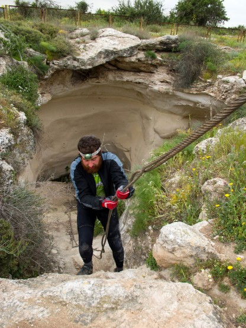
Второй выход из пещеры Хазан
Мы так и не нашли входа в большой зал, хотя и облазили вроде бы все. Хазан совершенно не похожа на осмотренные нами ранее пещеры.
Дальше нас ждали обширные развалины древнего города. Место совершенно не туристическое и тем интереснее, затем участок скучного грейдера вдоль военного полигона и ближе к вечеру очередной парк, вблизи местечка Лахав.
Заехали мы туда по большому кругу, предварительно испачкав бутылки вонючей водой, которой с нами поделились местные жители арабского вида.
В Лахаве закупились едой, набрали воды получше и вернулись в парк. Встали скрытно, так как местные утверждали, что егеря не в восторге, когда в парке ставят палатки.
Дневной пробег 48, 8 км, набор высоты 1146 метров
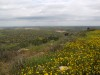 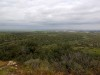 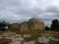 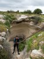 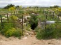 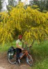 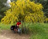 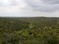 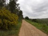 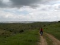 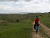 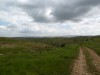 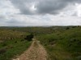 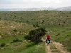 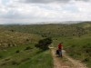 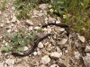 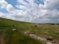 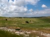 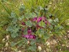 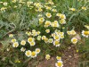 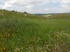 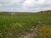 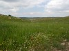 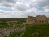  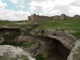 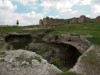 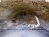 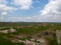 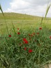
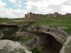 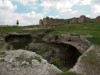 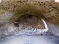 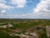 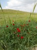  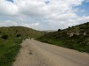 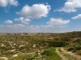 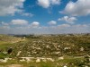
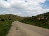 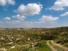 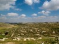  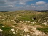
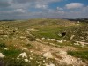  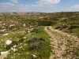 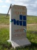 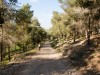 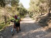 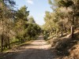
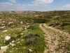 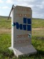 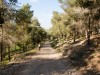 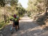 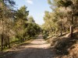
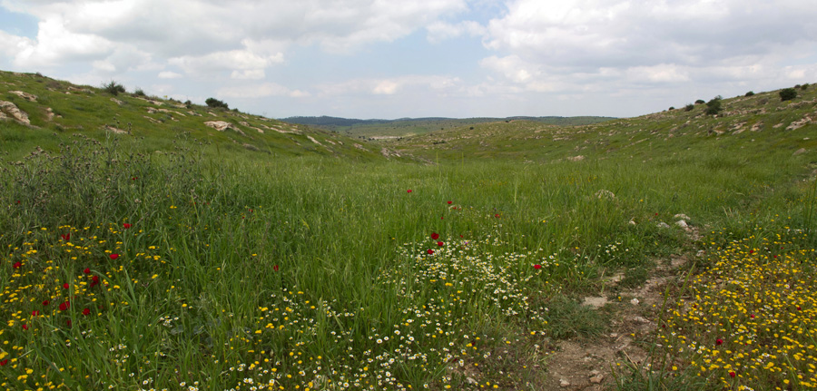
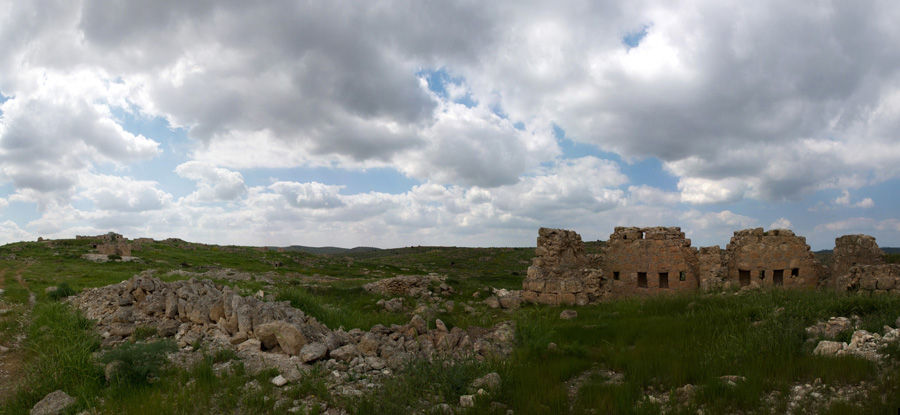
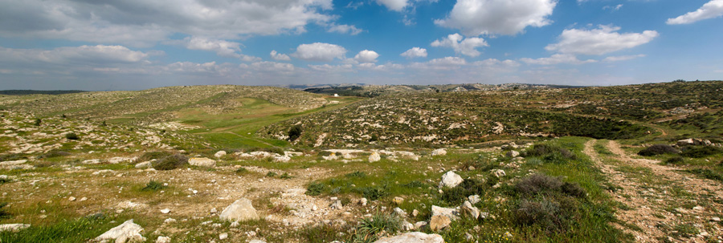